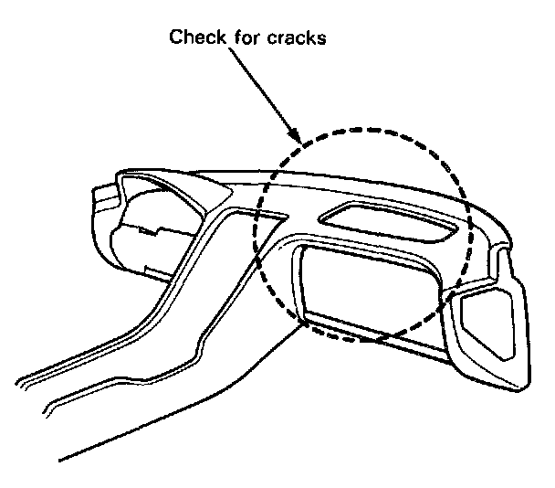

Initial Inspection and Diagnostic Overview
INSPECTION AFTER DEPLOYMENT
After a collision in which the airbags were deployed, inspect the following:
1. Inspect the dash sensors for physical damage. If the sensors are damaged, replace them.
2. Inspect all the SRS wire harnesses. Replace, don't repair, any damaged harnesses.
3. Inspect the cable reel for heat damage. If there is any damage, replace the cable reel.
4. Remove the passenger's lower dashboard panel, the glove box lid, and the glove box. Remove the passenger's airbag assembly, the mounting bracket, and frame from the dashboard. Remove the support bracket from the steering column beam.
5. Check for cracks around the passenger's airbag and glove box openings. Use a bright light to check from below, and a mirror to check from above. If any cracks are found, replace the dashboard.
6. After the car is completely repaired, turn the ignition switch on. If the SRS indicator light comes on for about six seconds and then goes off, the SRS system is OK. If the indicator light does not function properly, go to SRS Troubleshooting.
